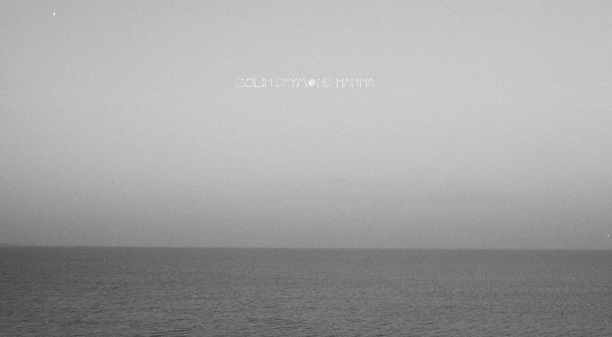

An interview with Colin Daymond Hanna, Co-founder, Earendil
Creating light in the darkness
Recorded August 2026 · Published September 2026
Colin Daymond Hanna climbed a mountainside in the Austrian Alps to take this interview. It felt fitting - Colin describes himself as a child of the earth. He is most at home in the water, has strong opinions about the specific beauty of black and white photography, and has been shaped by his travels, from interviewing strangers in Chinese villages as a nine-year-old with a camcorder to getting hugged on the streets of Cairo from local Soundcloud fans. Chapter by chapter, life showed him that software can be a force for good, if it’s built transparently and with the good of the user in mind. Earendil, co-founded with Armin Ronacher and makers of the beloved tools Pi and Lefos, is that belief made into a company.
Through our conversation, we learned that Earendil makes creative decisions most companies would never think to make. The team frowns upon using LLMs for published writing. Their logo was drawn by hand, after an elven boat. The waves on their landing page were delicately coded by Armin from one of Colin’s own b&w ocean photographs. The interview explores where this sensibility comes from: the seven principles they wrote before building anything, why the prompt is a more insightful artifact than the AI generated output, and why it might be possible to put machines in the room meant to strengthen human agency, bridge division and ignorance, and cultivate lasting joy and understanding.
Tell us about your life growing up and story leading up to the early days of founding Earendil.
It starts with my mom. She was an architect at MIT in the 1970s, when very few women were studying architecture there and people still drew all the plans by hand, so she imparted upon me an artistic streak that was technically grounded and precise.
I’ve been lucky enough to feel like a child of the earth. My first memories are from Jakarta, Indonesia, where I grew up the first five or so years of my life. I spent a lot of my boyhood in Hong Kong. But I’m also a rooted Californian and went to high school in the Bay Area.
I’ve always been interested in how you can let yourself be a filter in a medium. I used to travel to China a lot in the 90s, and there’s camcorder footage of me as a nine-year-old going around interviewing people in Chinese villages. You, as the receiver of the information, act as a filter, but the information itself is not being generated by you. There’s nothing artificial about it. I find humanity really beautiful, our planet really beautiful. And I feel this intense desire to try to share that.
The other important dimension to me is that I feel at home in the water. I’m a surfer, swimmer, and diver. My goal is that next summer I’ll go to the masters world championship with my dad and compete there together. That would be about 20 years since I swam at the US Olympic Trials in 2008.
You’re also a talented photographer. We noticed most of your work is in black and white. What do you love about it?
I had an informal mentor in black and white photography, Christine Turnauer, who was an assistant to Frank Horvat, a French photographer who does wonderful portraiture. Black and white focuses the mind on elements even more fundamental than what we see with our own eye. It contains less information than the way we perceive reality, so there’s a focus on framing. What is the quality of the light, and where does it fall? What are the qualities of the shadows? Black and white isn’t really black and white. It’s shades. You can get a subtlety and nuance that’s hard to come by in color.
How did working at SoundCloud influence you?
I was hired at SoundCloud as a junior generalist looking at markets outside the US and Europe. SoundCloud’s second largest market was Egypt, and nobody in the company had any idea why. So I traveled there, and I was getting hugs on the streets of Cairo when people saw me in my SoundCloud t-shirt. 40% of Egyptian smartphone users were listening every month.
The driver was Mahraganat, a mix of electronic music and rap that was big in the slums of Cairo. Because it was associated with the poor castes of society, the traditional A&R functions in the music industry didn’t take it on, and so SoundCloud was one of its only distribution channels. It was an influential chapter for me because it showed that software can be good, if it’s designed well, transparently, and with the good of the user in mind.
Now you’re building Earendil. What is its purpose, and what are the operating principles you live by?
Earendil was created by Armin and me as a vessel - a vessel for products and tools that will make things better for us humans, harnessing the most powerful technologies of our time, but doing all of that to serve us.
Eärendil is an important figure in Tolkien’s legendarium. He’s the first character Tolkien described, and he played this role of bringing light to the darkness. We feel people need that light right now. There’s so much dystopia and doomerism out there, and while some of that fear may be well grounded, we believe it would be better if fear was replaced by agency. We can still influence and control the outcomes. So we wanted our company, the people we work with, and the products we build to instill hope in people.
We started Earendil as a public benefit corporation, to craft software and open protocols that strengthen human agency, bridge division and ignorance, and cultivate lasting joy and understanding. Anything powerfully in service of those goals, we’ll consider pursuing. Anything that violates them, we won’t.
We defined seven principles and seven modalities for how we do things. There are things in there like “be compassionate and be kind.” There’s “family first,” which is not to be misconstrued as a lifestyle job. Armin and I are both fathers, and we’re both clear that our family is more important than our work. But that does not mean you cannot be intense and pursue excellence in your work.
Within the goal of building tools that instill optimism, how would you stack rank the most important tenets?
The first is transparency. Just being forthright with our community, our customers, our users. It’s something Armin brought from Sentry. Imagine something went wrong. The reflex is to tell everybody about it, not to hide it. If we’re vulnerable with our users, that empowers them, because the thing they’re spending their time, attention, and money on is honest with them.
The second is allowing people to make something their own. This is something people love about Pi and Mario got so right. Users develop a relationship with their tool because it does things how they want things to be done.
The third is that we try our best to not do things we’d feel ashamed or guilty of. You may or may not be familiar with the fact that some people are feeding data centers with jet fuel just to maximize GPU utilization. For the variables we can control or influence, we’re going to make sure they don’t suck. I can’t look my kids in the eye and say, “This is how we’re making money, and by the way, somebody somewhere is feeding a data center jet fuel to produce a bunch of slop.”
In your words, what are Pi and Lefos? And how would you describe a harness to someone who isn’t from the AI world?
Right now, on the product side, the right way to describe us is a harness company. The harness is probably the lowest level interaction point of the software that sits on top of or alongside the model itself, and it’s governing the behavior of the model.
I think of the model as the engine of a car, and the harness as the chassis. The chassis is the frame through which the production of force by the engine is mediated. It connects the engine to a set of wheels (a set of other components) that allow you to have a car (a chatbot, an agentic application, a recruiting agent, a code review agent). You can make certain decisions on the body of the car, but the chassis is governing fundamentally what the core components of the vehicle are. You fit the engine into the chassis to make it work.
What’s also nice, at least in the form of Pi, is it can be one harness where you swap out the model. I can govern a bunch of things that I own, and the AI model that sits underneath it, I can swap in and out. That is something that is mine. This is important to people.
Lefos is a thicker harness built with Pi, made primarily for the email channel, where your sessions are stored as email conversations. That was a deliberate choice, as more and more human conversations are happening with machines. All the archives and records are yours. You have a legal right to the correspondence, you can search them, index them, port them over to other things.
What is a specific product or brand decision that you particularly love? What was the creative process behind it?
Armin and I have personally designed a lot of our framing and branding. The first landing page of our website was a black and white photograph of the ocean with a long horizon, inspired by the photographer Sugimoto. I had taken it driving from the mountains down to the sea. We made this decision partly because Eärendil was a mariner, a journeyman on the sea. Then one day Armin decided to add waves, and he personally coded the algorithm that draws them, working on it until it was right. It came from somewhere that was earthly and real, but crafted into the digital realm.

The logo is something I designed, first by hand. It’s drawn after an elven boat, but it’s become this abstract shape. And the pi.dev website is something we’ve all worked on as a team. Ramiz has done a lot with the Tetris animation. We get millions of hits to that site per week, and at one point the animation was taking too long, so I took time to re-optimize it. I realized if we optimized it by 40 percent, we were saving, in aggregate, days of human life every day. Even as founders, we care a lot about the small details.
For the branding on Pi, why Tetris and why the grid lines?
It comes down to the composability and extensibility of pi. Computers and machines can do things that are just fun, and we want working with Pi to feel fun for the end user. It also speaks to the fact that you can build complex shapes out of things that feel minimal and primitive on their own.
Lefos has a distinct voice and personality. How do you think about language, in your products and in how the team writes?
The voice of Lefos, the system prompt, the personality, is something we’ve spent a lot of time crafting and iterating. It’s interesting that you can now moderate such important aspects of how a software system behaves using natural language. One of our designers studied English. Many English majors are trained to write concisely, find the right words, use the right style. Language allows you to pack information in really elegant ways if you can find the right words for things.
One of the principles in our company is we do not have LLMs produce writing for us. Sure, we’ll have an LLM produce a summary of a call transcript, that’s fine, they’re good at compression. But when we want to convey information to other humans, it’s so presumptuous to have it author something and not at least cite it. If you’re using an LLM to produce writing that you’re sending on your behalf, cite the model, and ideally cite the harness too. The output you’re sharing with a teammate, boss, friend, partner: they want to hear from you. They don’t want to hear from one of six sets of weights being produced by billions of dollars of hardware. There’s so much bad writing out there now, and within three sentences, you can tell when a human did not write this.
Something we’re craving too is reading the prompts people are crafting, how they’re talking to their harness and their coding agents.
Instead of sharing the slop that came out of the model, I’d rather see your prompt. With your prompt, I can go send it to twelve different models. The prompt is what’s more unique - it’s the crux of the idea.
You’re taking this interview completely by voice from a Vienna mountainside. Where does voice fit into the products you’re building?
We’re doing a lot of prompting through voice. Voice is a richer medium than people give credit to. Right now, we’re having a nuanced conversation, and it’s not requiring me to stare at a screen. Voice is a minimalist channel that lets software fall into the background when it’s appropriate, and your foreground can be the real world again.
Voice also gives us an opportunity to be more multi-party. We should be having shared conversations with machines more. So much of building in AI now is people gathering together, then breaking apart, then seven different people input seven different versions of what they think needs to get done to seven different models. If those conversations were happening with the machine in the room, it would be a lot more efficient token-wise, but we’d also arrive at a version of truth more readily.
Is there a specific source (book, film, work of art) that has moved how you think?
My favorite book is Barbarian Days. It’s an autobiography of a journalist and writer for the New Yorker, but the book is about how surfing has been the central thread of his life. The way he describes his relationships, having kids, and pursuing a career while also having something else of value to him… I appreciate that perspective. So many times when you get to know someone in public, it’s people bragging about their career and how much money they made, and you don’t get a sense of richness or depth. I want to know: what else has this person’s life brought them?
Where do you go to feel inspired?
Nature. If you enter nature with a perceptive eye, it’s really hard not to be floored by the beauty, whether that’s mountains, oceans, bodies of water. It’s silent and calm, a place that can reflect back and help structure your own thoughts.
Also traveling. One of the first trips Armin and I took was to China. We took the high speed rail through the country, and I’m lucky enough to speak Mandarin, so I could converse with everyday people on the street. We’re eight billion people. We all have the same biological needs, a shared set of what makes us human, and then we express that differently in our cultures. You find smiling faces everywhere, people having kids, men and women working hard… people starting families, burying their moms and dads, learning. We’re just doing it in different ways.
What advice would you leave for people building in AI?
There’s an important role for everybody who’s lucky enough to be closer to the center of this thing. These machines have this tremendous capacity to compress the information humanity has formed up to this point. How we wield that, how we disseminate that technology, how it gets grafted onto humanity. It’s such an important time. Most people are focused inwardly on the technology, the next decimal point model and its improvements against benchmarks, with way less thought around how it’s going to be deployed in a classroom, the right way to bring it to people. Small things, like how we should start citing its outputs, transparency. These kinds of tenets are going to be really important to influence the positive and negative energy that’s to come.